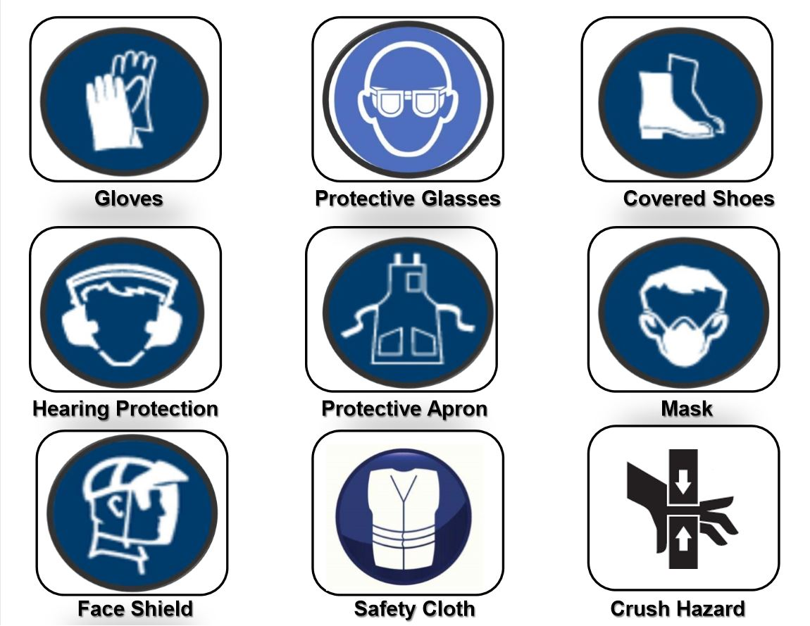
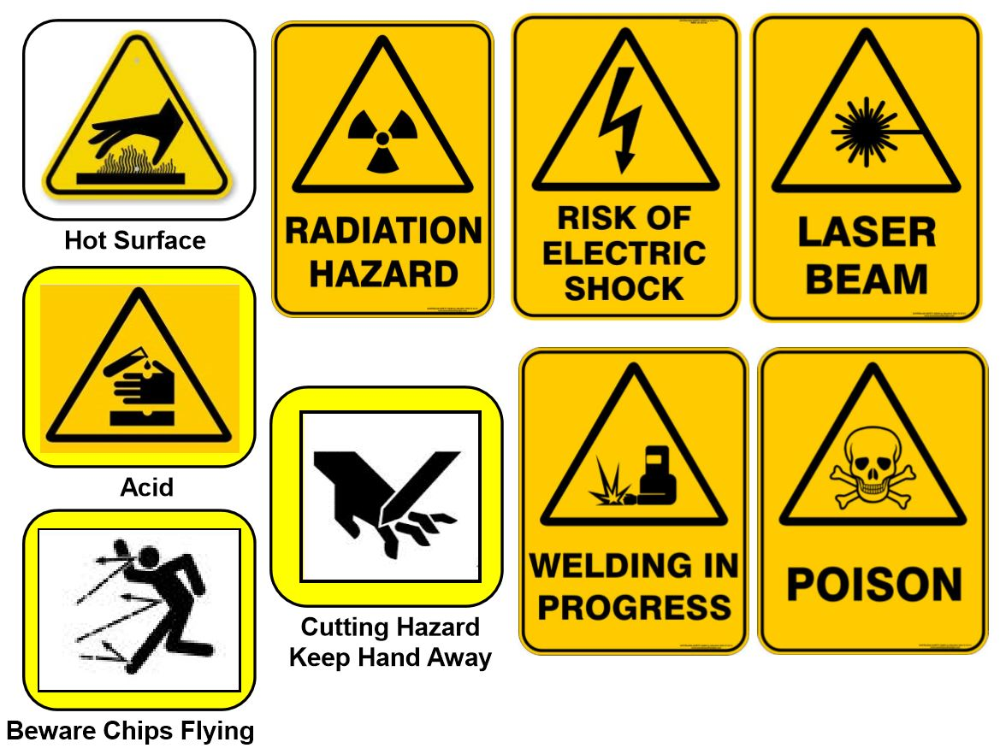
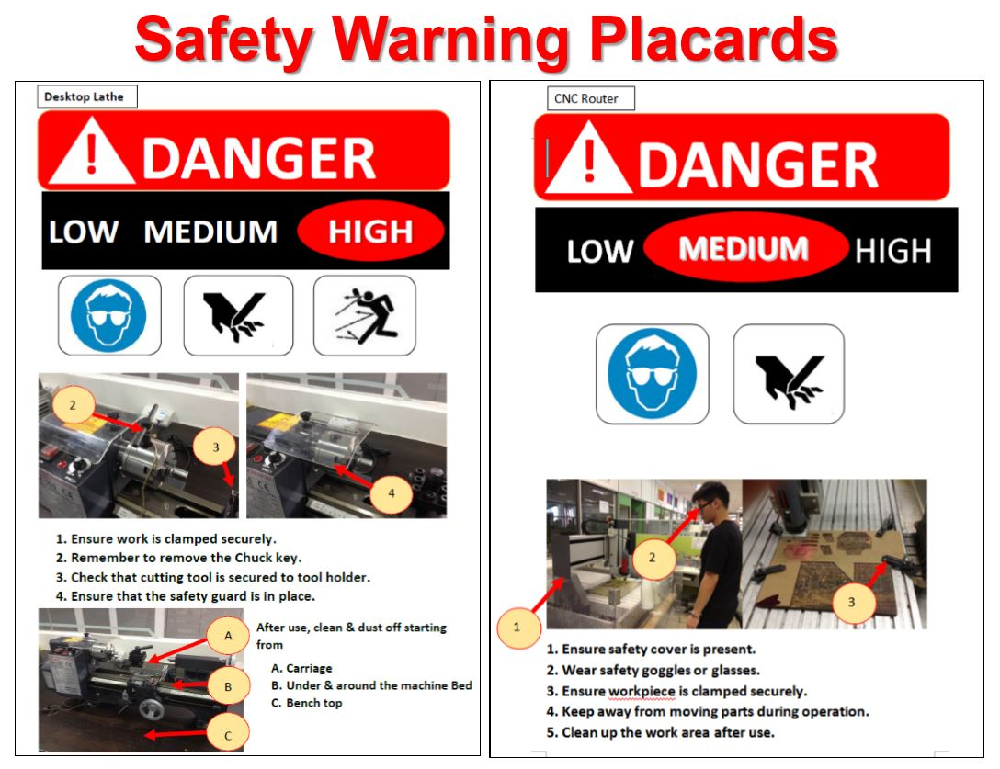
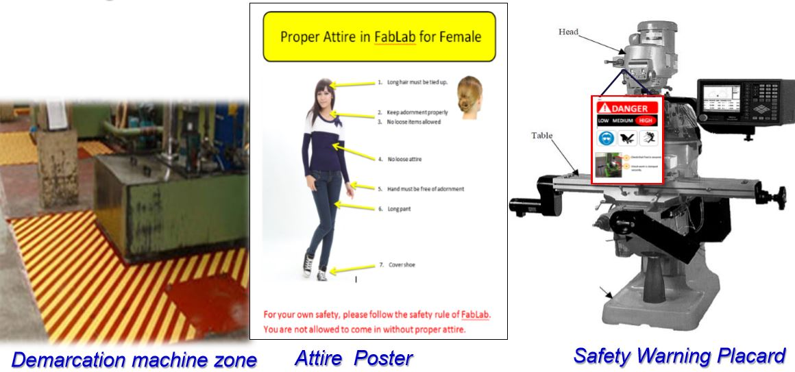

Week 01: Fablab Safety
- Fablab Safety is important! But how is it maintained?
- SP ensures that safety is secured by
- Setting Rules for Safety Management, which are:
- Compulsory Safety Instructions & Certification Program for all Students.
- Safety Infrastructure to be visible on shop floor of workshops.
- Safety Patrol
- Compulsory Housekeeping by students after using the machines.

- Setting Rules for Safety Management, which are:
- But what is the Workshop Safety and Certification Program?
- Its objective is to:
- help students understand WSH regulations in SP and the safe Practises in Fab Lab/workshops,
- and help familiarise students with the safety infrastructure in Fablab/Workshops and to know the various Machine Hazards.
- In order to attain the Certification, students must attend lessons before sitting for an assessment to be able to use the FabLab.
- Failures for the assessment must resit the assesment.*
- But why must students attend this Workshop?
- Singapore Polytechnic has a legal responsibility under the Workplace Safety and Health (WSH) Act 2006 to ensure a safe working environment.
- To ensure that all students are given appropriate safety and health training related to their field of study.
- SP's SAFE Framework needs the students to know how to act and what to do in the case of accidents, which will be taught in the workshop.


- General Safety Instructions
- Emergency Procedures
- In the event of emergencies, assistance may be summoned using the following helplines:
- For Ambulances and SCDF: Call 995
- For Police: Call 999
- For all emergencies and incident reporting: Call SP Emergency Hotline 6772-1234, when treatment to injury is needed, and the school's general office at 67721206
- When making an emergency call, it is important to give precise information such as:
- Name of Caller
- Location(Block and Room Number)
- Nature of emergency(e.g. Fire, Explosion, Violent Behaviour, etc)
Section 2: Workshop Safety Infrastructure and Safety Communication
- What is the objective of this section? What will be covered in this Section?
- 1. To understand the Safety Infrastructure in workshops and the Fab Lab.
- In workshops or Fab Lab, hazard communications are visible to remind students of workplace hazards and the safety precautions to take at specific work areas, especially when working with a hazardous machineries.
- 2. General Workshop Safety Communications
- 3. Attire for workshops and Fab Lab
- This is the proper standard of dressing for Males.
This is the proper standard of dressing for Females. - 4. Safety Posters and Safety Warning Placards
- Shown below are some examples of Safety Warnings which can be found on the Safety Warning Placards on the various machines.
 
Many of these warnings can be found on Placards on each of the machines, detailing and showing what dangers there are to watch out for while using each machine, as shown below

On the machine, it will also give step by step instructions for before and after use of the machine.

3. Hazards associated with machinery & workplace
- This section will cover 4 main things, and those are:
- 1. To understand Mechanical Hazards.
- 2. To recognise primary areas in machineries or workplace where mechanical hazards are present.
- 3. To identify the "danger areas" in machines.
- 4. To know & understand of Non-Mechanical Hazards.